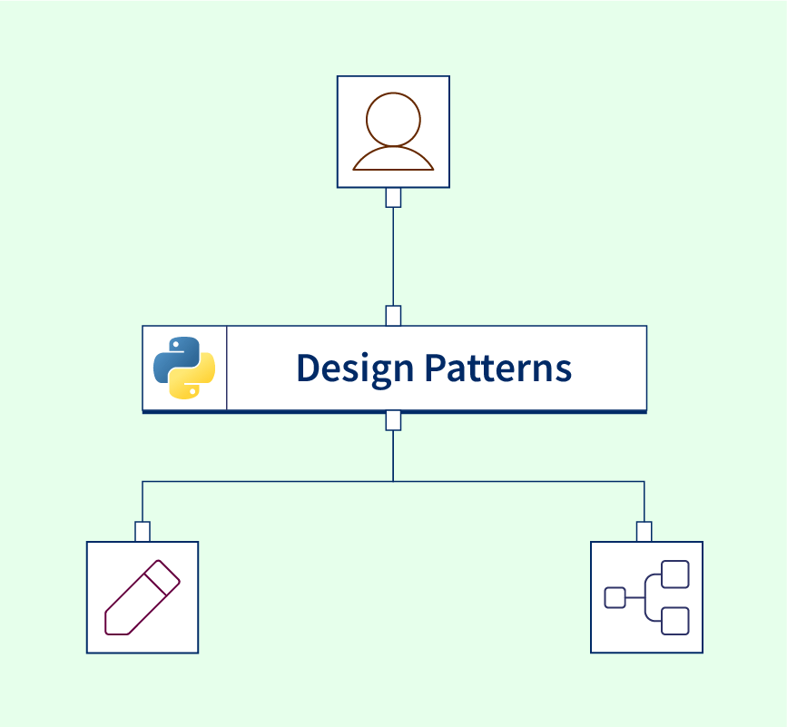

デザインパターン

デザインパターン（Design Pattern）とは、ソフトウェア設計でよく発生する問題を解決するために、繰り返し検証されてきた再利用可能な解決策の集合です。
簡単に言うと、デザインパターンは一種のコードを書く際の「型」です。。
デザインパターンは具体的なコードではなく、特定の状況でどのような構造を使ってコードを整理すれば、システムがより柔軟で保守しやすくなるかを示すものです。
デザインパターンの本質
建築業界の設計図（ブループリント）を想像してみてください。建築家は毎回ゼロから家を設計するのではなく、実証済みの建築パターンを参考にします。同様に、ソフトウェア開発においても、デザインパターンは実証済みの「ソフトウェアの設計図」を提供し、車輪の再発明を避けるのに役立ちます。
なぜデザインパターンが必要なのか
1. 保守性が高い
- デザインパターンを使うと、コードを修正しやすくなります。
- 要件が変わったときに、全体を大きく変更するのではなく、特定のモジュールを変更するだけで済みます。
2. 再利用性が強い
抽象化された設計により、複数のプロジェクトで同じ構造を再利用できます。
3. チーム協力の共通言語
「この機能はデコレータパターンで実装しよう」——チームメンバーは意図をすぐに理解でき、コミュニケーションコストを削減できます。
4. アーキテクチャ思考を高める
デザインパターンを学ぶことはコードを暗記することではなく、問題を抽象化する方法や拡張ポイントを設計する方法を学ぶことです。
デザインパターンの分類
デザインパターンは通常、大きく3つのカテゴリに分類され、それぞれ異なるレベルの設計問題を解決します。
生成パターン
これらのパターンはオブジェクトの生成メカニズムに注目し、オブジェクト生成をより柔軟に、要件に合ったものにします。
主なパターンは次のとおりです。
- シングルトンパターン：クラスのインスタンスが1つだけであることを保証する
- ファクトリパターン：オブジェクト生成のインターフェースを提供し、サブクラスがどのクラスをインスタンス化するかを決定する
- ビルダーパターン：複雑なオブジェクトの構築とその表現を分離する
構造パターン
これらのパターンはクラスとオブジェクトの組み合わせ方に注目し、より大きな構造を形成します。
主なパターンは次のとおりです。
- アダプターパターン：互換性のないインターフェースを連携して動作させる
- デコレータパターン：オブジェクトに動的に新しい機能を追加する
- プロキシパターン：他のオブジェクトの代理を提供し、そのオブジェクトへのアクセスを制御する
振る舞いパターン
これらのパターンは、オブジェクト間の責務の分担と通信方法に注目します。
主なパターンは次のとおりです。
- オブザーバーパターン：オブジェクト間の1対多の依存関係を定義する
- ストラテジーパターン：一連のアルゴリズムを定義し、それらを相互に置き換え可能にする
- コマンドパターン：リクエストをオブジェクトとしてカプセル化する
よく使うデザインパターンの適用シーン
表を使って、よく使われるいくつかのデザインパターンの適用シーンを簡単に見てみましょう。
| デザインパターン | 解決する問題 | 典型的な適用シーン |
|---|---|---|
| シングルトンパターン | グローバルに一意なインスタンスを保証する | データベース接続、設定管理、ログシステム |
| ファクトリパターン | オブジェクト生成のロジックが複雑 | 異なる条件に応じて異なるタイプのオブジェクトを生成する |
| オブザーバーパターン | オブジェクト間の動的な通知 | イベント処理システム、メッセージ購読 |
| デコレータパターン | 機能を動的に拡張する | IOストリーム処理、ミドルウェアチェーン |